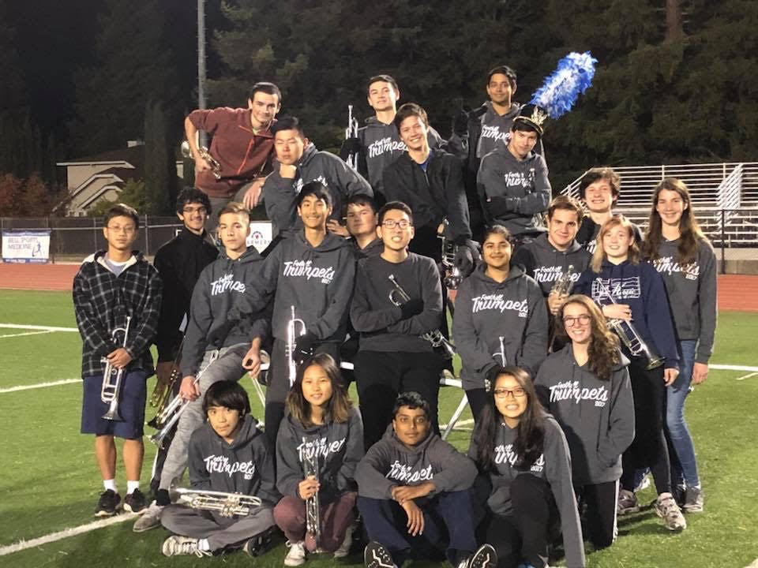

| WICS | |
|---|---|
| One of my hobbies is being involved on my school campus! Specifically, the organization that I am most involved in is Women in Information and Computer Sciences, or WICS. I have been a committee member ever since Winter quarter of my freshman year and I have served on the Marketing and Executive committees. Last quarter, I was elected as next year's Internal Vice President, which comes with the duties of building and growing the WICS community and ensuring every member feels accepted. I do this through leading socials, retreats, and a year-long mentorship program. WICS has allowed me to make many of my favorite college memories and I am excited to go through the many more memories to come! Check out our website here. | |
| Mixed Martial Arts | |
|---|---|
| Another hobby of mine is Mixed Martial Arts. I started practicing this sport when I was around 13 years old and worked hard to achieve my Black Belt in 2017, when I was 17 years old. After receiving my Black Belt, I decided to stick around to teach other MMA students who were working their way towards their Black Belt as well. Throughout my Black Belt journey, I learned the four pillars surrounding our organization: Honor, Loyalty, Family, and Bravery. These values have stuck with me during my first two years in college and hopefully will continue to drive me throughout the rest of my life. |  |
| Music | |
|---|---|
| The one thing that can calm me down at any time is music! I learned and played the trumpet throughout ages 9 to 18 and have been trying to find some free time to play while I'm home for the summer. On the right, you can see a picture of the trumpet section in my high school marching band. In addition, I also learned piano during those same years and made it through grade 7 out of 8 in the ABRSM piano examination board. Although I do not play my instruments as much as I used to, I make various Spotify music playlists for all my friends by examining the genres of music they listen to and providing them with fresh, new music that I believe they would enjoy. |  |